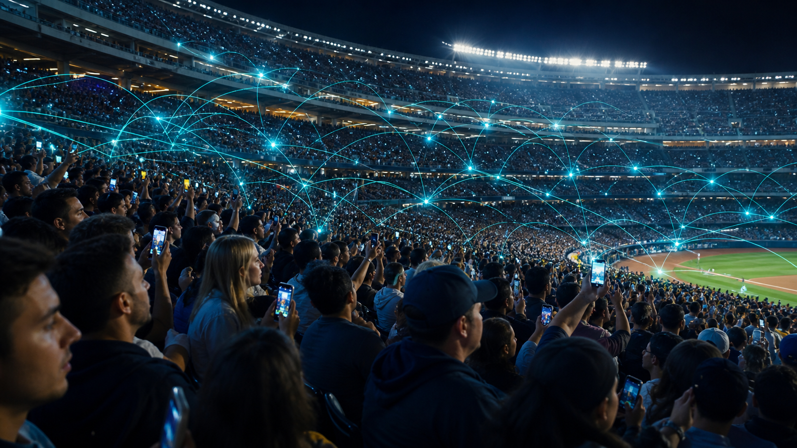
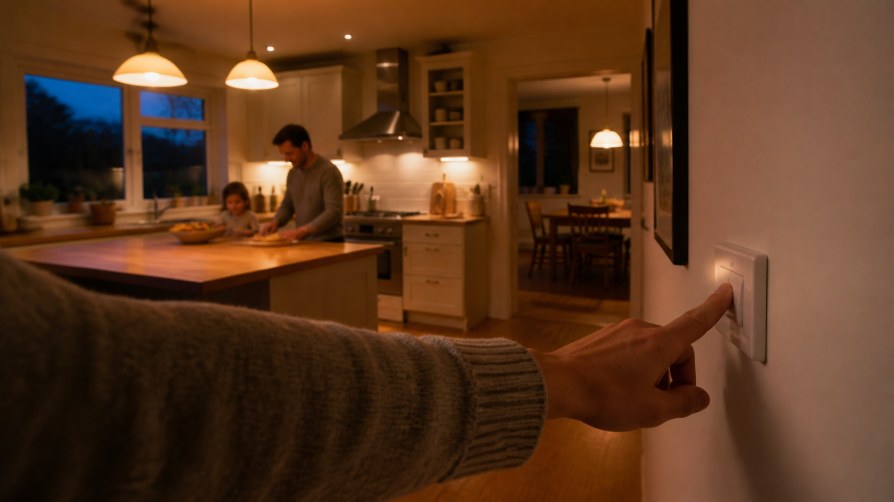
MANY FIXED CHIPS.
ONE JOB EACH.
ONE JOB EACH.
PHONE
→
BAND 1
BAND 2
BAND 3
ONE CHIP.
NINE RADIO LANES.
NINE RADIO LANES.
SPEEDREACHINTELLIGENCESENSINGCOORDINATION
WHAT CHINA BUILTDEMONSTRATED — LAB CONDITIONS
ONE 11 MM CHIP
Nearly the whole radio spectrum at once.
180 MICROSECONDS
A lane change faster than a blink.
A CONNECTION YOU STOP THINKING ABOUT
Reliability—not another speed-test trophy.
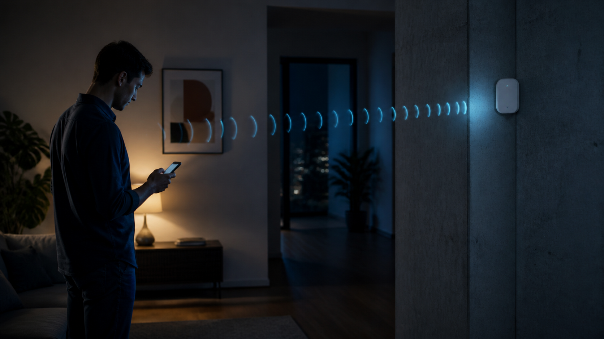
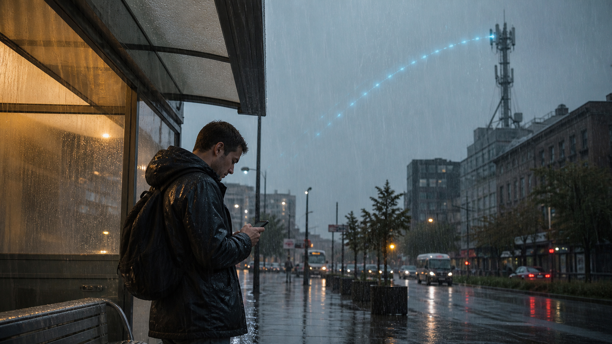
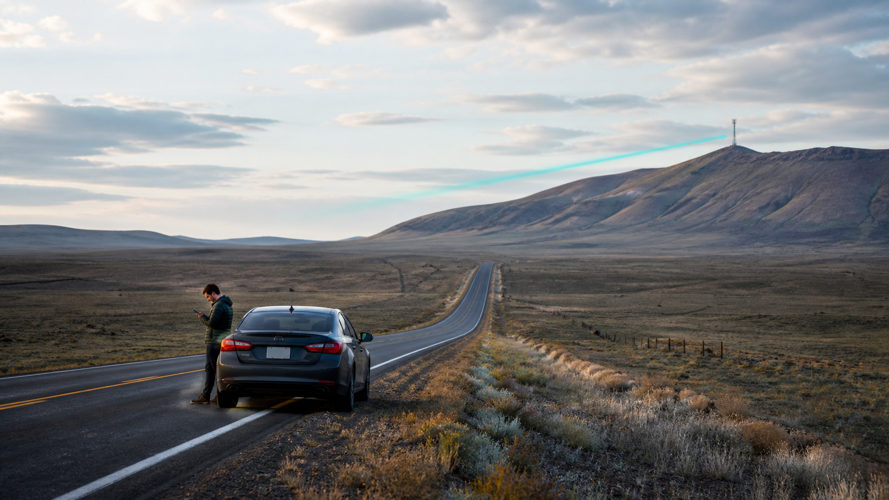
NATURE · ATMOSPHERIC ABSORPTION
THE AIR ITSELF CREATES A GAP.
The experiment avoided frequencies where atmospheric absorption becomes too severe.
NOT ONE MAGIC BEAM
FAST WHEN IT WORKS.
STURDY WHEN IT DOESN'T.
STURDY WHEN IT DOESN'T.
SPEEDREACHINTELLIGENCESENSINGCOORDINATION
REACH BEATS RAW SPEEDHYBRID COVERAGE
WALLS BLOCK THEM.
RAIN WEAKENS THEM.
DISTANCE KILLS THEM.
REMOTE VILLAGES.
FARMS.
FISHING BOATS.
DISASTER ZONES.
The goal: keep people connected when it matters most.
ITU · IMT-2030 FRAMEWORK
AI IS INSIDE THE NETWORK.
Not merely an application running on top of it—the network itself becomes an AI-native system.
STANDARD DIRECTION
TODAY, THE DEVICE CARRIES ITS OWN BRAIN.
PROCESSOR
+
BATTERY
=
BULKY

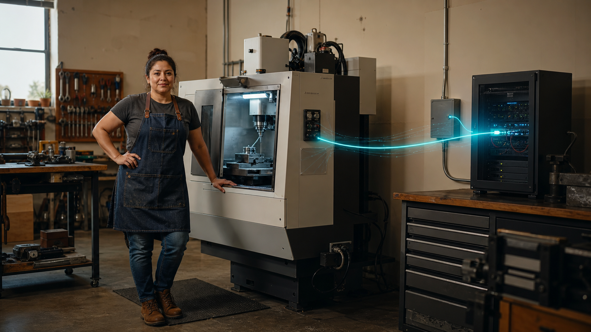
THE DEVICE BORROWS A BRAIN NEARBY.
LIGHT DEVICE
→
EDGE COMPUTE
→
ANSWER
SPEEDREACHINTELLIGENCESENSINGCOORDINATION
INTELLIGENCE MOVES INTO THE NETWORKPLAUSIBLE — NOT A PROMISED PRODUCT
LIGHT ENOUGH TO WEAR ALL DAY
Hard thinking leaves the glasses and returns instantly.
LIVE TRANSLATION IN YOUR EAR
SERIOUS COMPUTE—FOR TEN MINUTES
Rent the capability instead of buying the machine.
SPEEDREACHINTELLIGENCESENSINGCOORDINATION
TIME FOR THE CATCH.

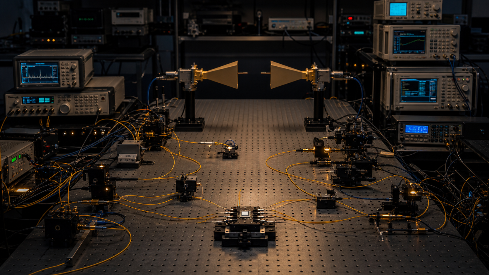
EARLIER EXPERIMENT
206+ Gb/s
A separate laboratory setup.
PEER-REVIEWED PAPER
~100 Gb/s
The abstract reports roughly half.
NETWORK ON A CHIP?
NO.
THE BREAKTHROUGH IS FLEXIBILITY.
COMMUNICATE
COMPUTE
POSITION
MEASURE
THE LABORATORY REVERSALCORRECTION — CLAIMS SEPARATED
PULL BACK—THE LAB APPEARS.
Lasers · amplifiers · detectors · racks · horn antennas
1.3 METRES
The wireless signal crossed the room.
THE NETWORK WON'T JUST CARRY DATA.
It will sense the physical world.
SENSING
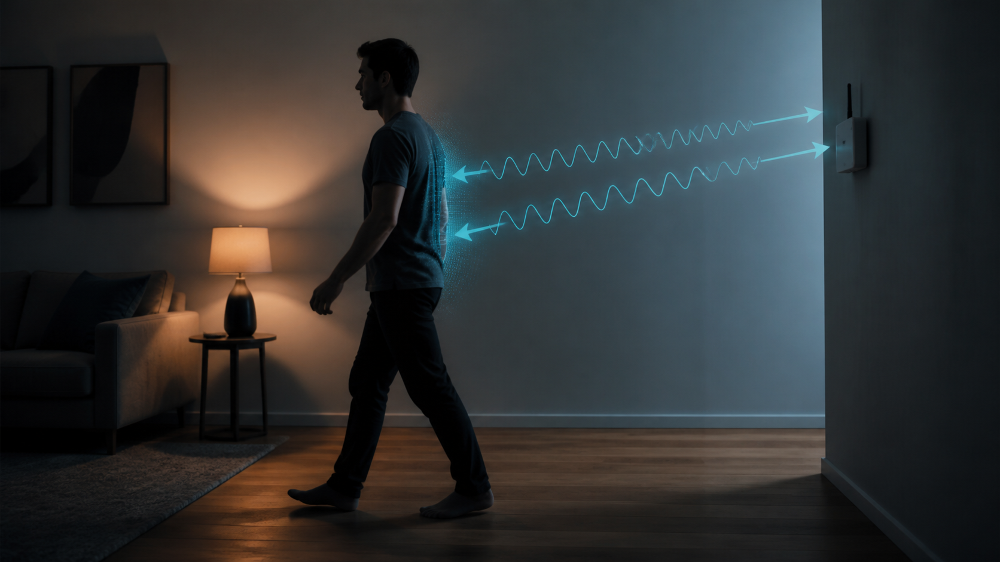
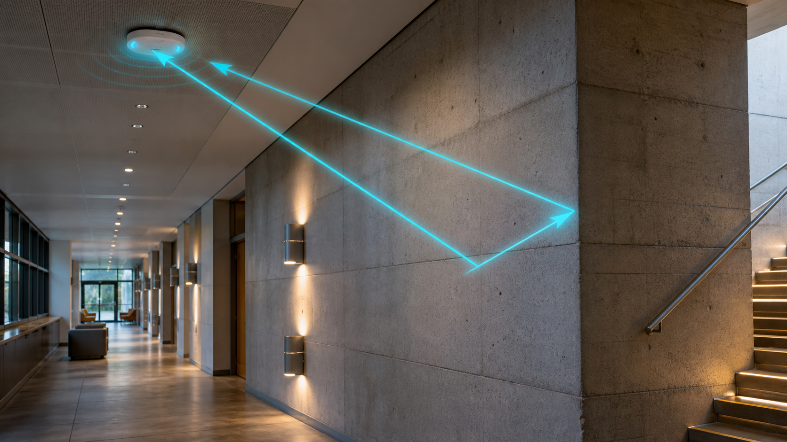
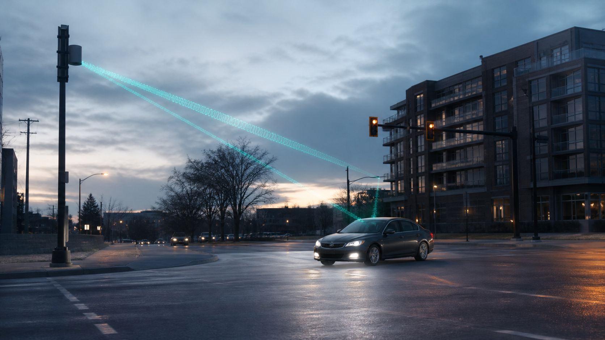
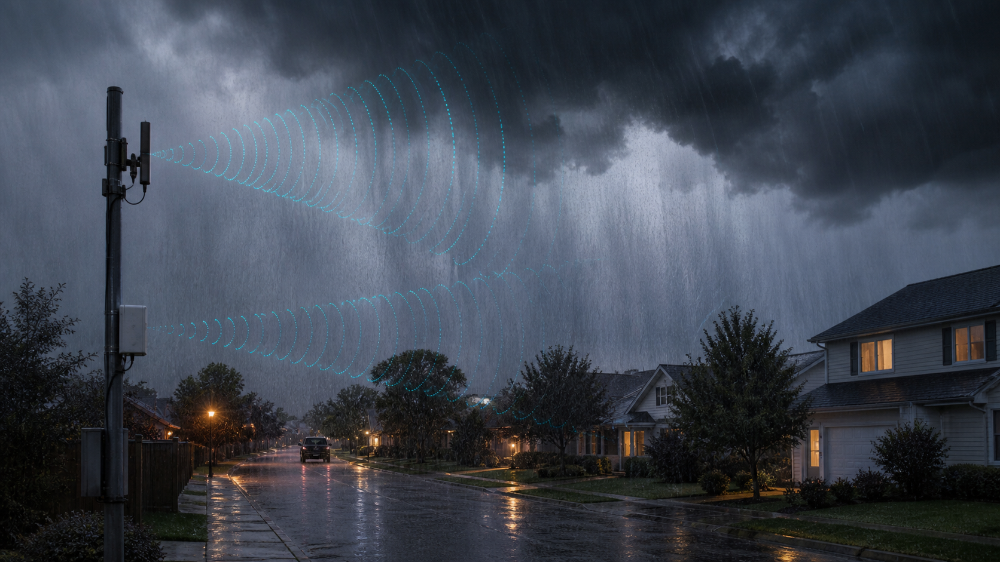
NOT A CAMERA IMAGE.
AN INFERENCE.
AN INFERENCE.
REFLECTION
→
POSITION
MOVEMENT
SPEED
THE OFFICIAL USES ARE ALREADY LISTED.
01GESTURES
02FALLS
03CARS + PEOPLE
04ENVIRONMENT
TARGETCENTIMETRES
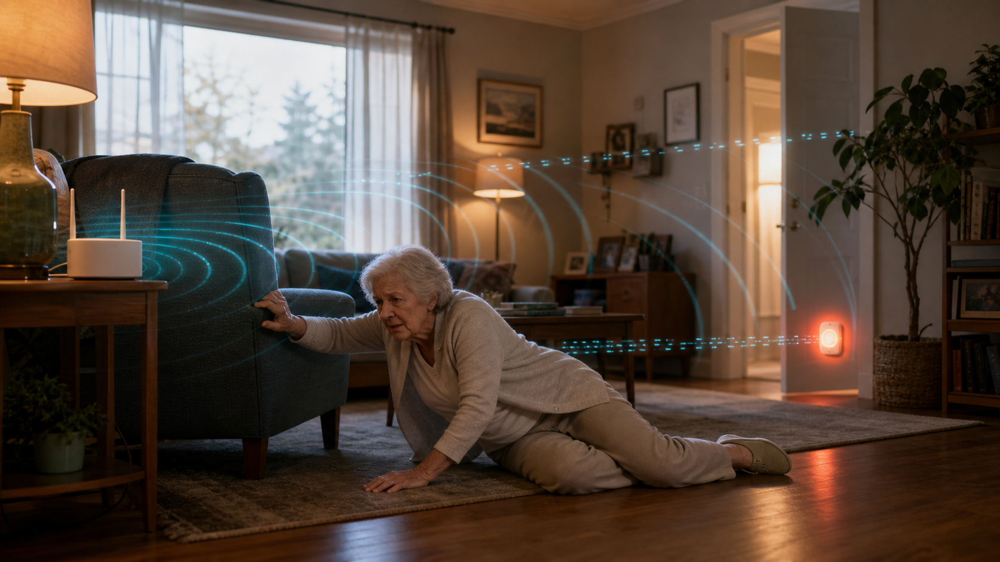
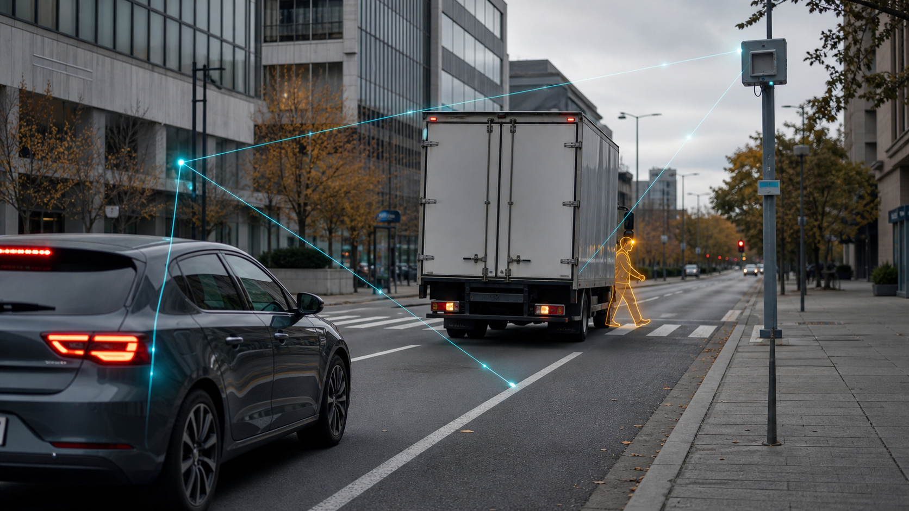
SPEEDREACHINTELLIGENCESENSINGCOORDINATION
IF THE ROOM CAN BE MEASURED—
WHO SEES THE MEASUREMENTS?
WHO SEES THE MEASUREMENTS?
THE PERSON
THE OPERATOR?
THE NETWORK SENSES THE ROOMSTANDARD TARGET — NOT A LIVING-ROOM GUARANTEE
PEOPLE.
WALLS.
CARS.
EVEN RAIN.
NO CAMERA WATCHING.
But if an aging parent falls, the house notices.
THE CAR KNOWS BEFORE IT CAN SEE.
SENSING BECOMES POWERFUL
WHEN EVERYTHING SHARES.
WHEN EVERYTHING SHARES.
SENSINGCOORDINATION

ONE LIVE MAP.
MANY MACHINES.
MANY MACHINES.
ROADHAZARD SHARED
WAREHOUSEWORKER PROTECTED
PORTTRUCKS + CRANES
HOSPITALPEOPLE + EQUIPMENT
SPEEDREACHINTELLIGENCESENSINGCOORDINATION
SHARED COORDINATIONPLAUSIBLE SYSTEM DIRECTION
A HAZARD NONE OF THEM CAN SEE YET
One warning reaches every approaching car.
THE ROBOT STOPS BEFORE THE WORKER CROSSES.
ONE CHANGING PICTURE
Trucks and cranes coordinate against the same map.
EQUIPMENT. STAFF. PATIENTS.
A hospital knows where all three are.
THE WORK ARRIVES
BEFORE THE MAGIC.
BEFORE THE MAGIC.
01MEASUREMENT
02SENSING
03SECURITY
04SPECTRUM
05NETWORK AI
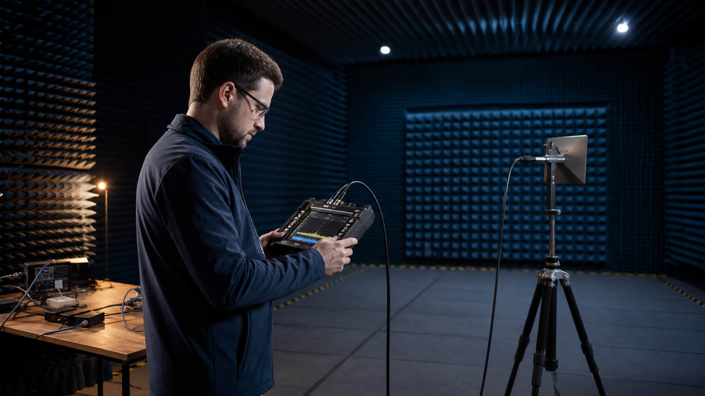
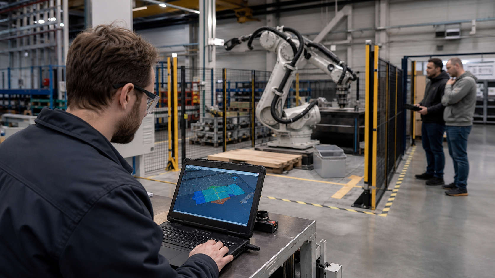
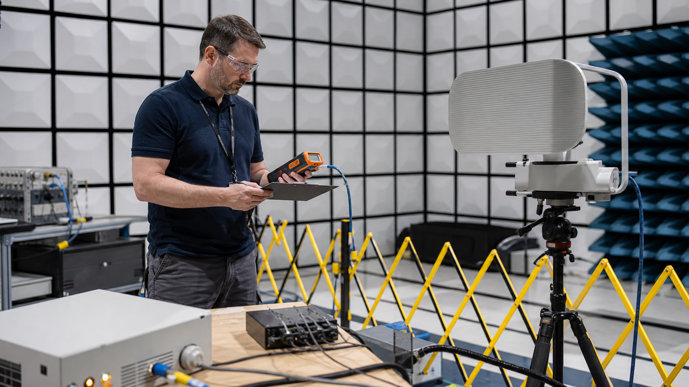

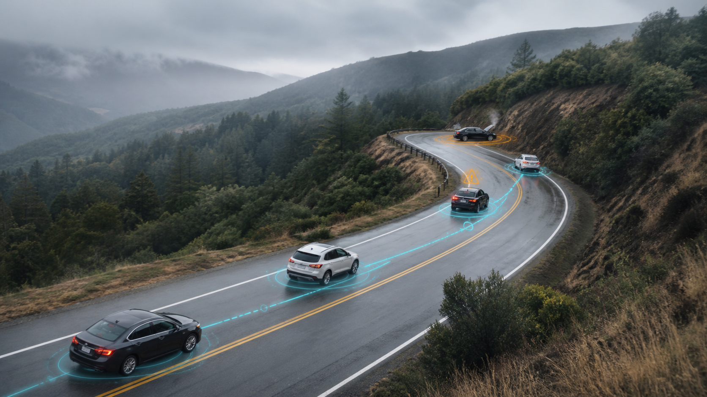

THE OPPORTUNITY LIVES
WHERE CAPABILITIES OVERLAP.
WHERE CAPABILITIES OVERLAP.
SPEEDREACHINTELLIGENCESENSINGCOORDINATION
OWNERSHIP
OF THE MEASUREMENTS.
OF THE MEASUREMENTS.
WORK ARRIVES BEFORE MAGICOPPORTUNITY — NOT A JOB GUARANTEE
INSTALL. MEASURE. TEST.
The practical work arrives first.
TEACH ROBOTS TO SHARE SPACE.
CERTIFY THAT IT IS SAFE.
A PORT THAT WASTES HOURS.
A HIGHWAY WITH TOO MANY ACCIDENTS.
A HOSPITAL THAT LOSES EQUIPMENT.
THE SAME MEASUREMENT.
HELP
CONTROL
THE DECISIONS GET BAKED IN EARLY.
WHAT GETS SENSED ◆
WHO CONSENTS ◆
HOW LONG IT STAYS ◆
WHO CAN BUY IT ◆
CAN YOU OPT OUT? ◆
OFFICIAL 6G ROADMAPS
PRIVACY AND SECURITY ARE CORE REQUIREMENTS.
The question is whether that becomes real protection or fine print.
DECIDED EARLY
SPEEDREACHINTELLIGENCESENSING ◆COORDINATION ◆
HELP OR CONTROLCONSENT · ACCESS · RETENTION
A FALL ALERT.
The house notices and calls for help.
AN OCCUPANCY HISTORY.
Someone else learns when you are home.
THE CHOICES ARE POURED IN BEFORE WE ARRIVE.
THE 6G IMPACT MAP
FINALLY LANDS.
FINALLY LANDS.
SPEEDREACHINTELLIGENCESENSINGCOORDINATION


LAST—ONLY WHEN FOUR LOCKS OPEN.
COST
BATTERY
STANDARDS
CONSENT
NOT JUST A PIPE.
A PERCEPTION + COORDINATION FIELD.
A PERCEPTION + COORDINATION FIELD.
NOTICE
→
UNDERSTAND
→
COORDINATE
ASK FOUR QUESTIONS.
DEMONSTRATED
TARGETED
PLAUSIBLE
IMAGINED
THE VERDICTWHAT CHANGES FIRST — NEXT — LAST
THE BREAKTHROUGH IS REAL.
Faster phones are the least interesting part.
FIRST: REACH.
Fewer dead zones. Fewer drops. Rural and remote coverage.
NEXT: SENSING + COORDINATION.
Factories · ports · highways · campuses · hospitals
LAST: THE CONSUMER FACE OF INTELLIGENCE.
KA
WHAT CHANGES NEXT—AND WHAT IT MEANS FOR YOU.
SUBSCRIBE
LIKE
♢ BELL
KEYADVANCESREAL · TARGETED · PLAUSIBLE · SPECULATIVE